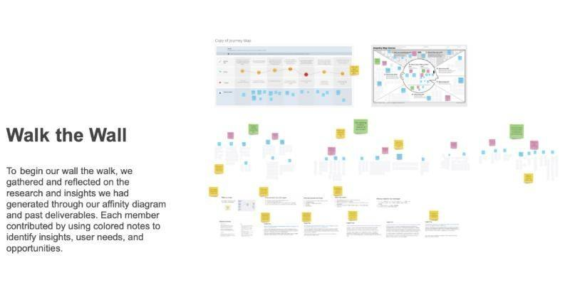
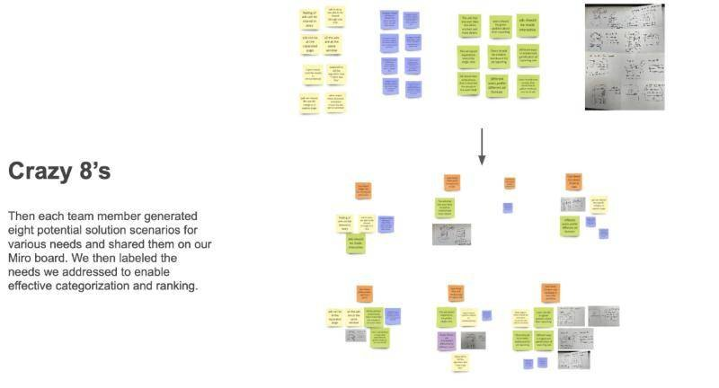
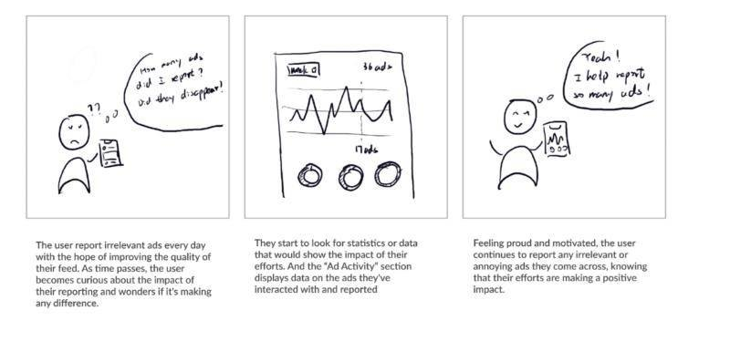
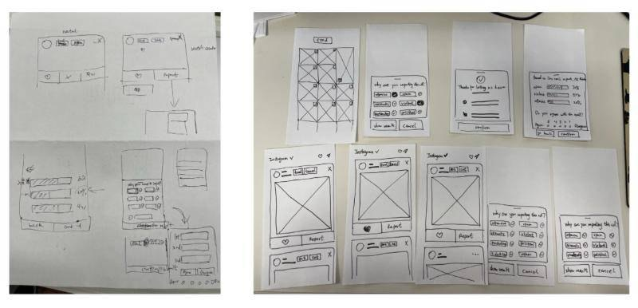
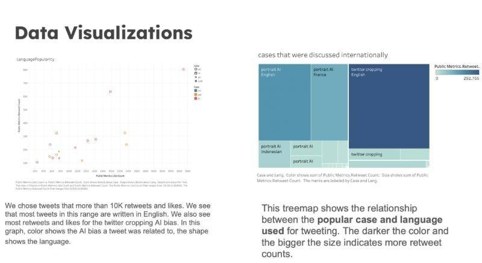

User research
User-centered research and evaluation
Problem statement
Our goal was to understand and evaluate everyday algorithm auditing: whether and how we can empower and incentivize everyday users to uncover harmful algorithmic biases in AI systems, and help AI/ML teams address them. Everyday algorithm auditing treats AI/ML systems as black boxes in which users look for potential biases through day-to-day use, across different social and cultural contexts. AI/ML teams can connect their systems to this collective audit service and use the collective power of regular users to overcome their blind spots in detecting bias.
Research methods


Storyboarding

Lo-fi prototyping

